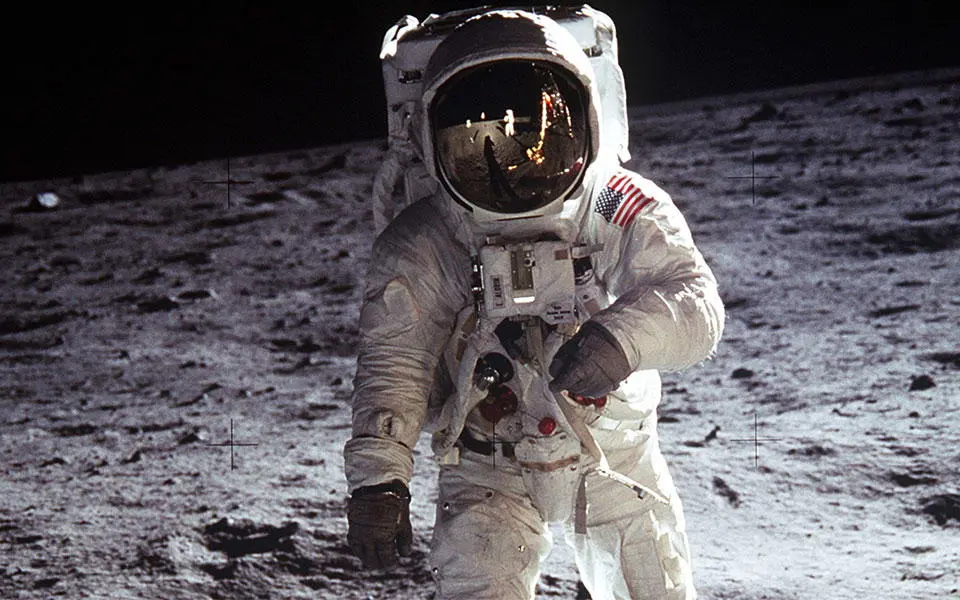
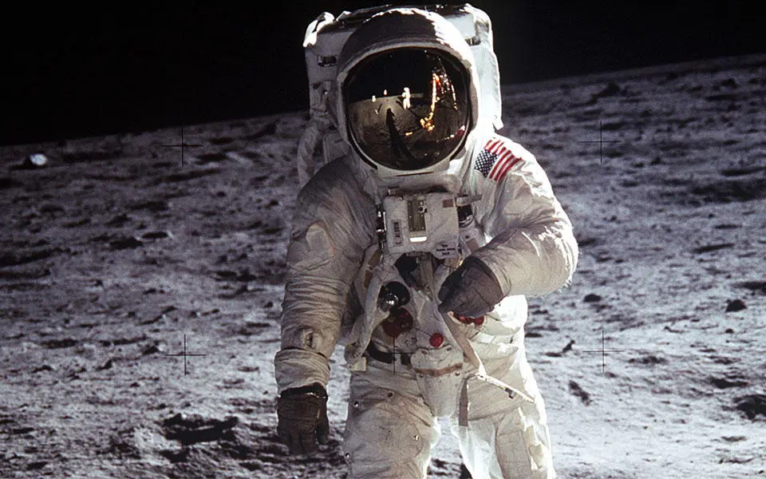

Menu
Historia Lotów Kosmicznych
- Neil Armstrong dowódca misji, pierwszy człowiek, który postawił stopę na Księżycu.
- Buzz Aldrin pilot modułu księżycowego, drugi człowiek, który spacerował po powierzchni Księżyca.
- Michael Collins pilot modułu dowodzenia, który pozostał na orbicie księżycowej podczas lądowania.
Rakieta Saturn V wystartowała 16 lipca 1969 roku z Centrum Kosmicznego imienia Johna F. Kennedy'ego, na Florydzie. Po trzech dniach podróży załoga weszła na orbitę Księżyca.
Lądowanie:20 lipca 1969 roku, Neil Armstrong i Buzz Aldrin w module księżycowym Eagle wylądowali na powierzchni Księżyca w miejscu zwanym Morze Spokoju (Mare Tranquillitatis). Neil Armstrong wypowiedział wtedy słynne słowa: To jest mały krok dla człowieka, ale wielki skok dla ludzkości
.
Po spędzeniu około 21 godzin na powierzchni Księżyca, Armstrong i Aldrin wrócili do modułu dowodzenia, gdzie czekał na nich Michael Collins. Następnie załoga powróciła na Ziemię, lądując na Oceanie Spokojnym 24 lipca 1969 roku.
Apollo 11 zakończyła się pełnym sukcesem, otwierając nową erę w badaniach kosmosu oraz pozostawiając trwały ślad w historii ludzkości.
 

Strona wykonana przez: Mariusz Karczykowski